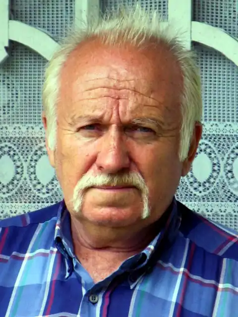

Український письменник, критик, культуролог, народознавець, громадський діяч Богдан Петрович Чепурко народився 26 серпня 1949 в с. Осівці Бучацького району Тернопільської області.
Член Національної спілки письменників України (1990 р.). Лауреат Всеукраїнської премії "Благовіст" (2000 р.), Міжнародної премії Організації Оборони Чотирьох Свобід України за перемогу в конкурсі на найкращу Поему про Україну (2000), обласної премії імені М. Шашкевича (2005 р., м. Львів). Чоловік поетеси Марії Чумарної.
Закінчив Коропецьку середню школу-інтернат, філологічний факультет Львівського університету (1974 р., нині національний університет імені Івана Франка). Завідував сільським клубом у с. Зелена на Бучаччині. Працював учителем української мови та літератури в селах Поточани (Бережанського), Бариш (Бучацького) і Доброводи (Збаразького районів) та м. Збараж. Від 1975 — у Львові: науковий працівник, завідувач відділу фольклору Музею народної архітектури і побуту, завідувач відділу мистецтва журналу "Дзвін", редактор газет "Просвіта" й "Основа", завідувач відділу критики журналу "Річ"; член редколегії журналу "Основа" (м. Київ). Ініціатор створення гурту позадесятників. Збірки поезій: "Сонячна дорога" (1984), "Код спадковості" (1989), "Подільська височина" (1997), "Викрадення Європи" (2004), "Ранні вірші" (2004), "Вилітає ластівка з пейзажу" (2005), "Дві поеми" (2006), "Сезон мертвих дощів" (2006). Книжки для дітей: "Чом ти, гуско, боягузка?" (1988), "Вітер нашої землі" (1990), "Ми зваримо борщику" (1995), буквар "На білому світі" (1997), читанка "Хрещатий барвінок" (2004). Народознавчі трактати: "Українці" (1991), "Небесна родина" (1994). Методичний посібник "За образом і подобою Слова" (1997). Збірка гумору "Чепурески" (2006). Упорядник книжечки "Приказкове коло" (1994).